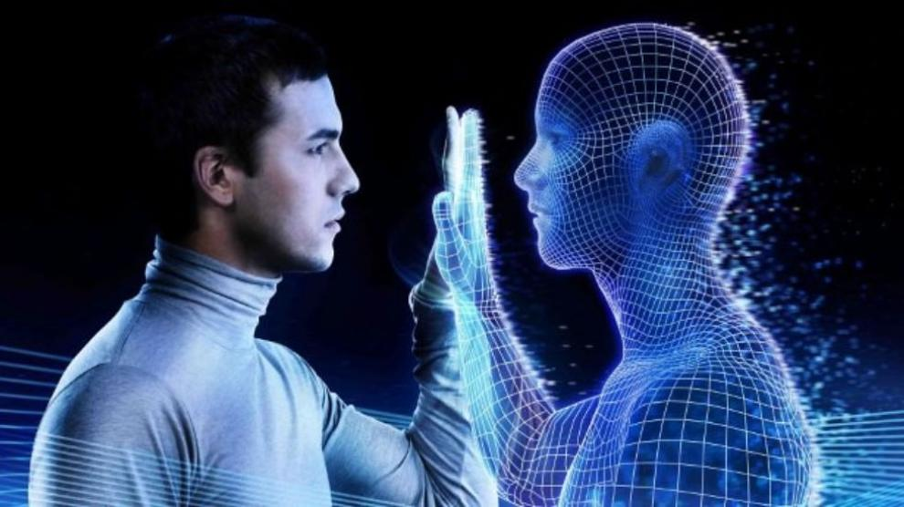

Propósito del sitio
Este sitio tiene como proposito ser el boceto para presentar al cliente el cual esta diseñado a explicar los fundamentos de HTML y la intreacción humano ordenador, como una forma de aprendizaje
Fundamentos de HTML:
Para empezar, debemos decir que es HTML, sus siglas que significan (HyperText Markup Language), en español es lenguaje de marcas de hipertexto y es el componente mas básico de los sitios web.
Este forma lo que va a ser la estructura del contenido web del sitio, el HTML usa marcas o también conocidas como etiquetas, para textos, imágenes y demás tipo de contenido para mostrarlo
en el sitio y posicinarlo. Algunas de estas marcas son head, title, body, header, footer, canvas, article, p, div, section, form, img, video, iframe, nav, entre otras las cuales se tienen
que poner entre dos signos de menor que y maor que, de esta forma "<" ">", y en algunos se deben cerrar con el mismo nombre de etiqueta y los signos de menor y mayor pero con un back-slash
"/" antes del nombre de la etiqueta y despues del primer signo.
Interacción Humano Computador:
La interacción humano computador, consiste en estudiar como la tecnologia evoluciona y esta es más comoda y facil de usar para el humano, la cual puede ser en varias ramas como lo es
la seguridad, usabilidad, funcionalidad y demás. Su idea tambien es disminuir enormemente el margen de error de los computadores, aumentar la eficiencia y satisfacción, disminuir el estres
y frustración.
